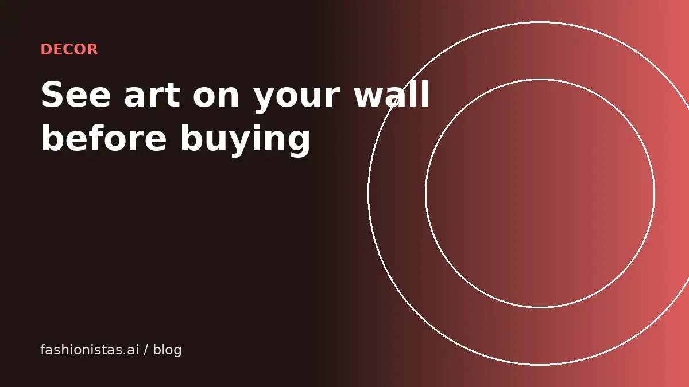

How to see art on your wall before you buy it

Art is one of the hardest things to buy online. A print that looks perfect on a screen can turn out tiny above your sofa, or overwhelm a narrow hallway. The fix is to preview it at real size on your own wall before you buy. Here's how to measure, choose the right size, plan the hanging height, and use a photo of your room to check.
Why art looks wrong after you buy it
Most art regrets come down to scale, not taste.
- Too small is the most common mistake. A piece that looked bold online becomes a postage stamp on a big wall.
- Wrong proportions for the furniture below it, like a narrow vertical piece over a wide sofa.
- Wrong height: hung too high, it floats away from the room.
- Color in the room: your light and wall color change how a piece looks.
All four can be checked before buying.
Measure your wall and furniture
- Measure the width of the wall or the section where art will go.
- Measure the furniture below it, such as the sofa, bed, sideboard or desk.
- Note obstacles: light switches, outlets, windows, sconces, thermostats.
- Write down the ceiling height.
Keep these numbers in your phone. You'll use them every time you shop for art.
Choose the right size
Common guidelines interior designers use:
- Above furniture, art (or a group of pieces) often looks best at roughly two-thirds to three-quarters of the furniture's width. Over a 90-inch sofa, that's roughly 60 to 68 inches of art.
- On an empty wall, aim for art that fills a good portion of the wall without crowding the edges.
- Narrow walls and hallways suit vertical pieces or a vertical stack.
- Groupings count as one unit; measure the whole arrangement including gaps, typically 2 to 3 inches between frames.
These are guidelines, not rules. Seeing it in your actual room is the real test.
Hanging height
A widely used guideline is to hang art so its center is about 57 to 60 inches from the floor, roughly average eye level. Galleries often use this.
Above furniture, leave roughly 6 to 10 inches between the top of the furniture and the bottom of the frame so the piece relates to the furniture instead of floating.
In rooms where you're usually seated, like dining rooms, slightly lower can look better.
The painter's tape method
The classic low-tech check: cut paper or cardboard to the art's exact size, or outline it on the wall with painter's tape. Leave it up for a day. Walk past it, sit on the sofa, look from the doorway. If it feels too small, it is.
It works, but it's slow, and it doesn't show you the art itself.
See it in your space with a photo
fashionistas.ai See in my space does the same check in a minute, with the actual artwork, and it's free.
- Take a straight-on photo of your wall in good light. Tip: stick a strip of painter's tape of a known length, say 12 inches, on the wall first, so you have a size reference in the photo.
- Add the artwork photo from your camera roll, such as a screenshot of the listing.
- Choose Wall, then drag the piece into place and use the Scale control until it matches its real size against your reference.
- Try different spots and heights, add a soft shadow, and download or share the preview.
- On phones that support it, enter the real width and height and tap the AR button to see the piece on your wall through your camera.
Your photos stay on your phone. Try two or three sizes of the same print side by side to decide which works.
Gallery walls
A gallery wall is a group of pieces arranged together. To plan one:
- Pick a unifying element: a frame color, a color palette or a theme.
- Lay the frames on the floor first and rearrange until it feels balanced. Larger pieces usually anchor the arrangement near the center or bottom.
- Keep spacing consistent, often 2 to 3 inches between frames.
- Trace each frame on paper, tape the paper to the wall, and mark the nail position on each one.
- Treat the whole group as one piece for sizing and height: center the group at about eye level, or 6 to 10 inches above furniture.
Previewing the group on a photo of your wall first saves a lot of holes in the plaster.
Frames, mats and lighting
- Mats (the border between print and frame) make smaller prints look larger and more finished. A wide mat in a larger frame can turn a modest print into a statement piece.
- Frame style should suit the room: thin black or natural wood frames work almost anywhere; ornate gold suits classic or eclectic rooms.
- Glass: anti-reflective glass helps in bright rooms. Keep valuable works out of direct sunlight to prevent fading.
- Lighting: a picture light or a nearby lamp makes art feel intentional at night.
These choices change the effective size of the piece, so measure the framed size, not just the print, when you preview.
Mirrors and decor too
The same approach works for mirrors, shelves, clocks and other wall decor. Mirrors in particular are worth previewing, because they reflect whatever is opposite them, and a large mirror changes how big a room feels. For floor and counter items like lamps and plants, See in my space has Floor and Counter modes as well as Wall.
Buying secondhand art and decor
Secondhand art, frames and mirrors can be great value on resale apps, estate sales and vintage shops.
- Ask the seller for exact dimensions, including the frame.
- Check condition: frame corners, glass, scratches on mirrors, fading, and foxing (brown spots) on prints.
- For original works, ask about the artist, signature and provenance.
- Ask how it will be packed. Glass and large frames need careful shipping.
Our guide to buying secondhand online safely covers checking sellers. And if you shop for clothes too, Try it on does for outfits what See in my space does for walls.
FAQ
How do I know what size art to buy for my wall?
Measure the wall and the furniture beneath it. Art above furniture often looks best at about two-thirds to three-quarters of the furniture's width. Preview it on a photo of your wall before buying.
How high should I hang art?
A common guideline is to put the center of the piece about 57 to 60 inches from the floor, and 6 to 10 inches above furniture.
Can I see how art will look on my wall before buying?
Yes. fashionistas.ai See in my space lets you add a photo of your wall and the artwork, drag and scale it into place, and on supported phones view it in AR at its real dimensions.
What size art goes over a sofa?
Roughly two-thirds to three-quarters of the sofa's width. Over a 90-inch sofa, that's about 60 to 68 inches of art, as one piece or a grouping.
How do I visualize art without an app?
Cut paper to the art's size or outline it with painter's tape on the wall, and leave it up for a day.